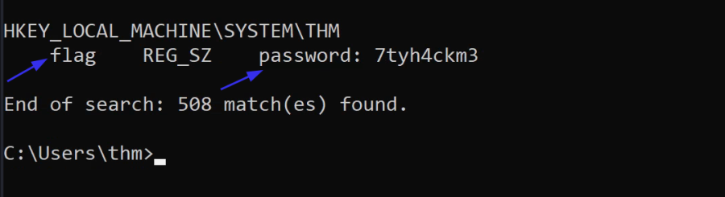

Crdential Access
Credential Access
Credential access is where adversaries may find credentials in compromised systems and gain access to user credentials. It helps adversaries to reuse them or impersonate the identity of a user. This is an important step for lateral movement and accessing other resources such as other applications or systems. Obtaining legitimate user credentials is preferred rather than exploiting systems using CVEs.
Credentials are stored insecurely in various locations in systems:
• Clear-text files
• Database files
• Memory
• Password managers
• Enterprise Vaults
• Active Directory
• Network Sniffing
Let's discuss them a bit more!
1. Clear-text Files
Attackers may search a compromised machine for credentials in local or remote file systems. Clear-text files could include sensitive information created by a user, containing passwords, private keys, etc. The MITRE ATT&CK framework defines it as Unsecured Credentials: Credentials In Files
The following are some of the types of clear-text files that an attacker may be interested in:
• Commands history
• Configuration files (Web App, FTP files, etc.)
• Other Files related to Windows Applications (Internet Browsers, Email Clients, etc.)
• Backup files
• Shared files and folders
• Registry
• Source code
As an example of a history command, a PowerShell saves executed PowerShell commands in a history file in a user profile in the following path:
C:\Users\USER\AppData\Roaming\Microsoft\Windows\PowerShell\PSReadLine\ConsoleHost_history.txt
It might be worth checking what users are working on or finding sensitive information. Another example would be finding interesting information. For example, the following command is to look for the "password" keyword in the Window registry.
c:\Users\user> reg query HKLM /f password /t REG_SZ /s
OR
C:\Users\user> reg query HKCU /f password /t REG_SZ /s
2. Database Files
Applications utilize database files to read or write settings, configurations, or credentials. Database files are usually stored locally in Windows operating systems. These files are an excellent target to check and hunt for credentials. For more information, we suggest checking THM room: Breaching AD. It contains a showcase example of extracting credentials from the local McAfee Endpoint database file.
3. Password Managers
A password manager is an application to store and manage users' login information for local and Internet websites and services. Since it deals with users' data, it must be stored securely to prevent unauthorized access.
Examples of Password Manager applications:
• Built-in password managers (Windows)
• Third-party: KeePass, 1Password, LastPass
However, misconfiguration and security flaws are found in these applications that let adversaries access stored data. Various tools could be used during the enumeration stage to get sensitive data in password manager applications used by Internet browsers and desktop applications.
This room will discuss how to access the Windows Credentials manager and extract passwords.
4. Memory Dump
The Operating system's memory is a rich source of sensitive information that belongs to the Windows OS, users, and other applications. Data gets loaded into memory at run time or during the execution. Thus, accessing memory is limited to administrator users who fully control the system.
The following are examples of memory stored sensitive data, including:
• Clear-text credentials
• Cached passwords
• AD Tickets
In this room, we will discuss how to get access to memory and extract clear-text passwords and authentication tickets.
Active Directory
Active Directory stores a lot of information related to users, groups, computers, etc. Thus, enumerating the Active Directory environment is one of the focuses of red team assessments. Active Directory has a solid design, but misconfiguration made by admins makes it vulnerable to various attacks shown in this room.
The following are some of the Active Directory misconfigurations that may leak users' credentials.
• Users' description: Administrators set a password in the description for new employees and leave it there, which makes the account vulnerable to unauthorized access.
• Group Policy SYSVOL: Leaked encryption keys let attackers access administrator accounts. Check Task 8 for more information about the vulnerable version of SYSVOL.
• NTDS: Contains AD users' credentials, making it a target for attackers.
• AD Attacks: Misconfiguration makes AD vulnerable to various attacks, which we will discuss in Task 9.
Network Sniffing
Gaining initial access to a target network enables attackers to perform various network attacks against local computers, including the AD environment. The Man-In-the-Middle attack against network protocols lets the attacker create a rogue or spoof trusted resources within the network to steal authentication information such as NTLM hashes.
Room Task
reg query HKLM /f flag /t REG_SZ /s

Run mmc in cmd
File --→ Add/Remove Snap in --→ Add Active Directory Users & Computers
Then look for user descriptions in Domain Controllers.

Or
Get-ADUser -Filter * -Properties * | select Name,SamAccountName,Description